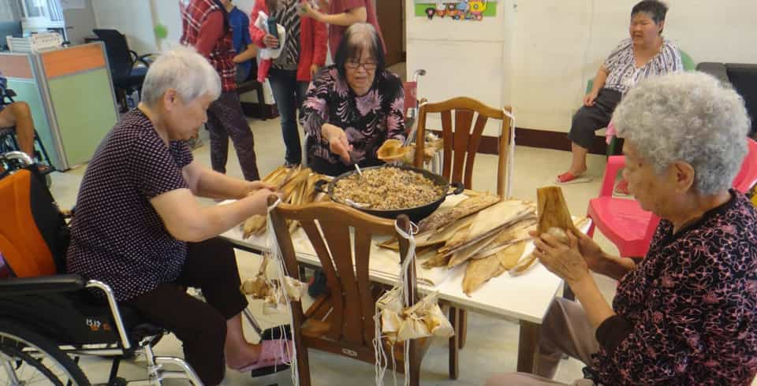

登入
|
註冊
最新話題
全部話題
專題
全部文章
最新新聞
熱門話題
圓夢人生
全部話題
健康
全部文章
照護醫療
養生抗老
長照搜尋
樂活
全部文章
食尚旅遊
品味人生
學習成長
理財
全部文章
保險規劃
退休
投資
活動
全部話題
最新話題
全部話題
專題
全部文章
最新新聞
熱門話題
圓夢人生
全部話題
健康
全部文章
照護醫療
養生抗老
長照搜尋
樂活
全部文章
食尚旅遊
品味人生
學習成長
理財
全部文章
保險規劃
退休
投資
活動
全部話題
長照機構搜尋
縣市
選擇縣市
台北市
高雄市
▾
鄉鎮區
鄉鎮區
▾
服務類型
服務類型
類型1
類型2
▾
服務類型
▾
評價
評價
▾
網友推薦
網友推薦
▾
關鍵字
搜尋條件：
服務類型
幸福熟齡
>
長照機構搜尋
新竹縣 ｜ 私立新埔家園長期照顧中心
評價比數
★★★★☆

服務類型：
養護型
電話：
02-27382912
E-mail：
philip84000@yahoo.com.tw
官方評價：
優等
地址：
305新竹縣新埔鎮關埔路水車頭段338號
官網連結：
https://www.facebook.com/HsinPuGarden
給予評比
★
★
★
★
★
機構搜尋排名
1
私立新埔家園長期照顧中心
2
鬼才導演盧建彰，為爸媽找安養院的驚心歷程鬼才導演盧建彰，為爸媽找安養院的驚心歷程
3
私立新園長期照顧中心
4
鬼才導演盧建彰，為爸媽找安養院的驚心歷程鬼才導演盧建彰，為爸媽找安養院的驚心歷程
5
私立新埔家園長期照顧中心
6
鬼才導演盧建彰，為爸媽找安養院的驚心歷程鬼才導演盧建彰，為爸媽找安養院的驚心歷程
7
私立新埔家園長期照顧中心
8
鬼才導演盧建彰，為爸媽找安養院的驚心歷程鬼才導演盧建彰，為爸媽找安養院的驚心歷程
9
私立新埔家園長期照顧中心
10
鬼才導演盧建彰，為爸媽找安養院的驚心歷程鬼才導演盧建彰，為爸媽找安養院的驚心歷程